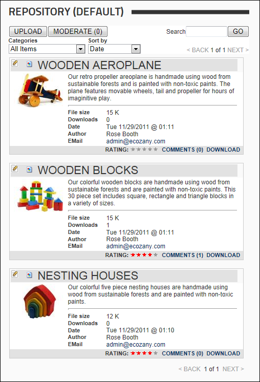
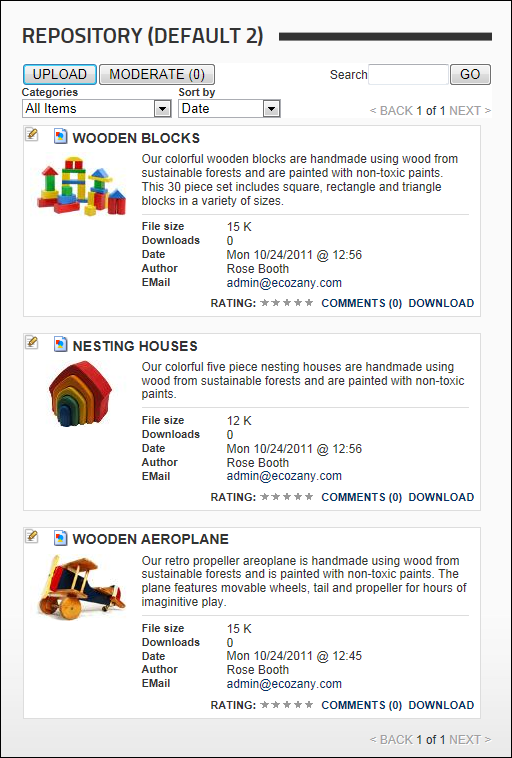
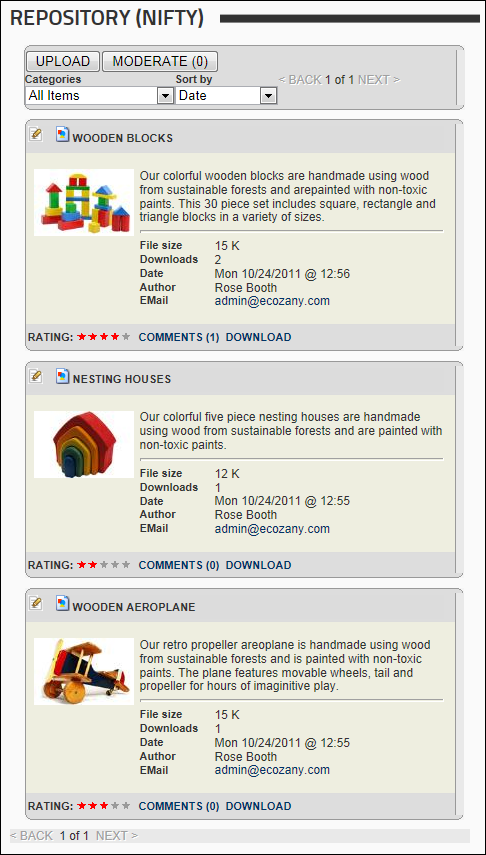

By applying either the Default, Default 2 or Nifty skins, the Repository module can be used to display of list of files with a corresponding image. Nifty is similar to Nifty Toggle however it doesn't include the summary field. Each listing displays the item title, thumbnail image, description, the contributor's name, the file size, the number of times the file has been downloaded, and the date and time when the item was last updated. The contributor can optionally display their email address. Users can click on the image thumbnail to view the full size image in a new Web browser. A link to DOWNLOAD the file is displayed to users in the download role.
Categories, sorting, ratings and comments are enabled on these skins.

The Default Repository

The Default 2 Repository

The Nifty Repository